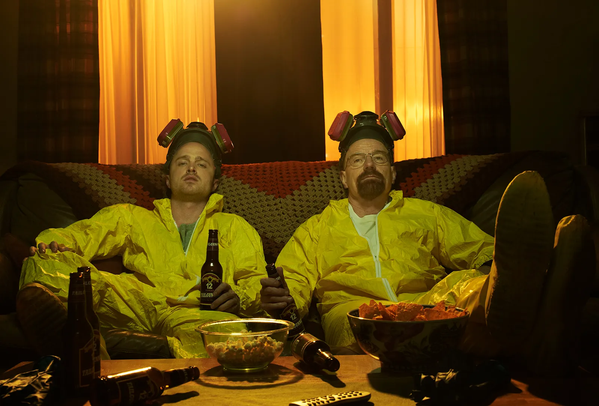
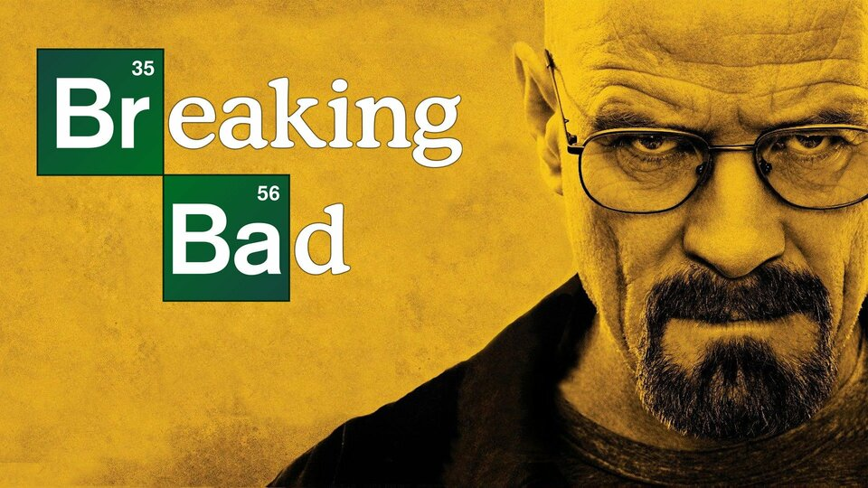
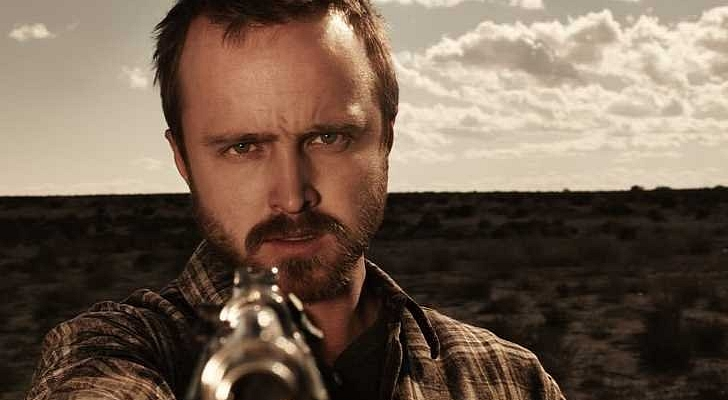
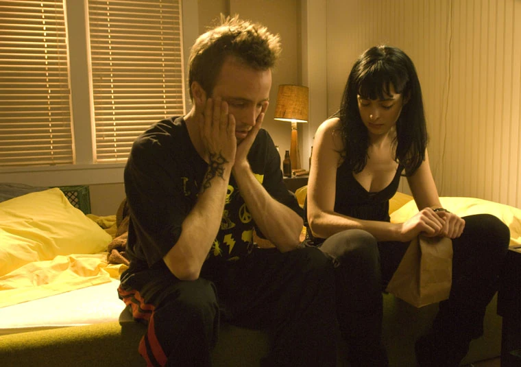

From Teacher-Student to Criminal Masterminds Breaking Bad's core relationship between Walter White and Jesse Pinkman evolves dramatically throughout the series. What begins as an uneasy alliance between a former teacher and student transforms into a complex partnership that drives the narrative forward.

Premise. Breaking Bad follows Walter White, a struggling, frustrated high school chemistry teacher from Albuquerque, New Mexico, who becomes a crime lord in the local methamphetamine drug trade, driven to provide for his family financially after being diagnosed with inoperable lung cancer.

Jesse Pinkman is introduced as an impulsive and hedonistic man, but also personable and possessing street-smarts.
Jane is shown to be a highly intelligent, caring and loyal young woman who is a skilled, creative artist and is overall a good person at heart. Jane, like her eventual boyfriend Jesse Pinkman, has not had an easy life due to strong parental interference which was a result of drug use.

Jesse loved Jane, it wasn't reciprocal. Her relationship with him was one out of spontaneity and convenience that ultimately descended into a partnership based on drug use. Her relapse ultimately displayed who she truly was and what was going to eventually happen with her overdose.